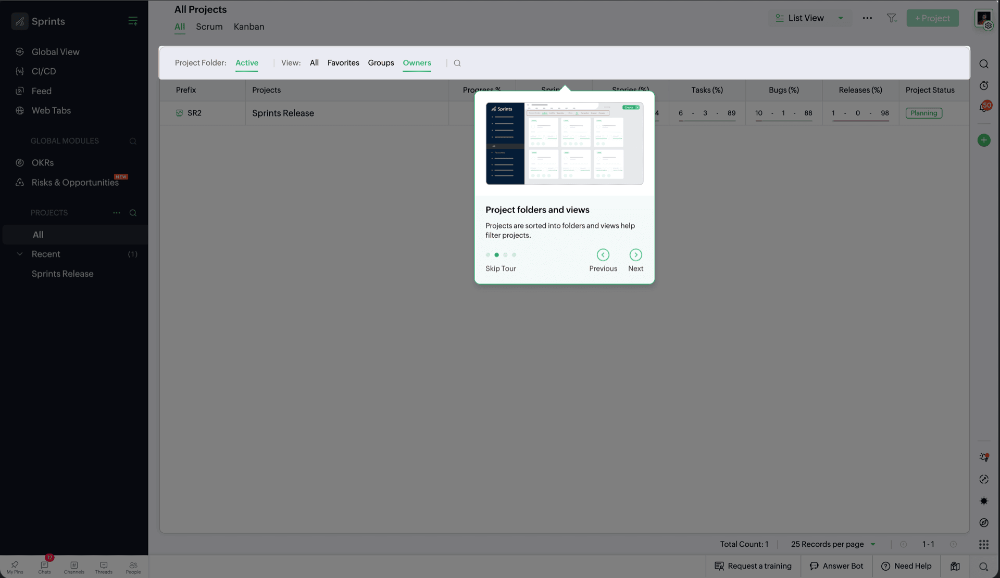
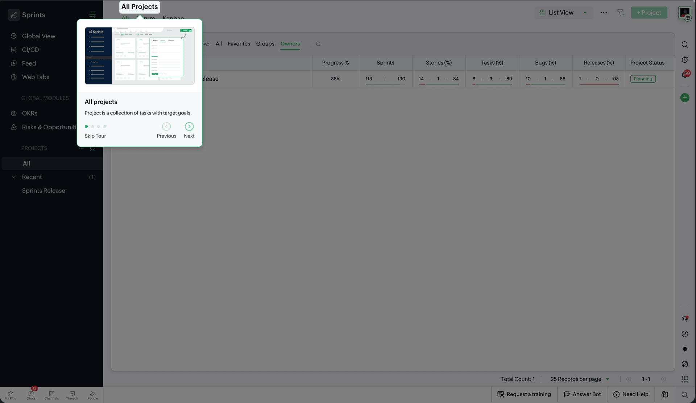
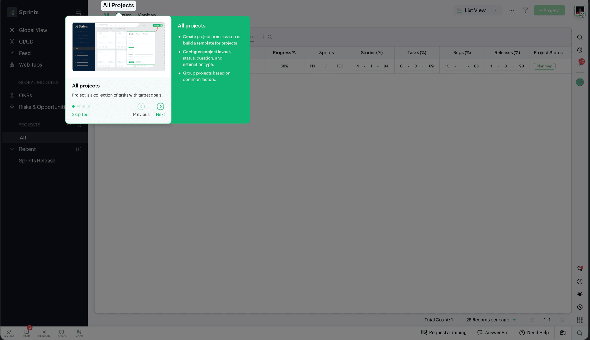

Product Tour — Zoho Sprints
New users couldn’t orient themselves in a dense interface. The brief: explain what each part does without pulling them out of the product.
TL;DR
Sprints throws a lot at you on day one — work items, sprints, filters, create, settings, all visible at once. I explored three tour patterns (full overlay, tooltip, split-panel), landed on the split-panel card, and refined it over five iterations. Shipped across every module in four weeks to 50K+ users. Animated illustrations were approved in concept, cut for timeline.
Key Takeaways
- Three directions first — aggressive overlay, detached tooltip, split-panel. Needed the extremes to trust the middle.
- Split-panel won: room for text and a screenshot without covering the whole screen.
- A tour that only works on one page isn’t useful. The component had to scale across Projects, Backlog, Board, Timesheet, Reports.

How It Started
New users were getting lost. Work items, sprints, filters, create, settings — all on screen at once. The PM wanted a guided tour for the key parts of each page.
My manager handed it to me. The brief was simple: explain what each area does, without pulling people out of the product.
Option 1 — Full-Screen Overlay


Big text on top of the UI, circular spotlight on the target, carousel with dots and Skip/Next.
Pros: Impossible to miss. Spotlight tells you exactly where to look.
Cons: Covers the whole page. You can’t use the product during the tour. The overlay fights the UI underneath — hard to connect the explanation to the thing it’s about.


Option 2 — Tooltip Popover


Smaller card near the highlighted element. Wireframe preview, title, description, step counter. Previous/Next buttons.
Pros: Less in your face. Most of the UI still visible.
Cons: Card feels disconnected from what it’s pointing at. Preview is small and abstract. Four steps means the card jumps around the screen — disorienting.


Option 3 — Split-Panel Card (Chosen)


Bullets on the left, screenshot on the right. Anchored near the UI with a pointer. Skip Tour, arrows, dot nav, and a “Go to help” link for people who want docs instead.
Why this won:
- Room for both. Text and visual reference without covering the page.
- No guessing. You read what it does and see where it lives at the same time.
- Present but not blocking. Big enough to notice, small enough to still feel like you’re in the product.
- Escape hatch. Power users can jump to help without finishing the tour.


The Pitch That Was Dropped
After we picked Option 3, I pitched animated illustrations per step — the right panel showing the action, not a static screenshot. Team liked it. Timeline didn’t. Custom animation for every step across every module was a no. Screenshots shipped. Still worked, just less fun.
Refining Option 3 — 5 Iterations
Once we committed to the split-panel direction, I spent the rest of the week iterating on layout, navigation, and typography.

Iteration 1 — Base split layout with Previous/Next text buttons and a step counter ("1 of 2"). Functional but the text buttons felt heavy, and the counter didn't scale well visually.

Iteration 2 — Added "Skip Tour" as a clear exit option. Refined typography and spacing within the card. The navigation still used text buttons, which felt cluttered alongside Skip.

Iteration 3 — Replaced text buttons with arrow icons. Added dot pagination to show progress. This reduced visual noise and made the navigation feel lighter.

Iteration 4 — Spacing and type refinements. Tightened the card padding, adjusted line heights, and balanced the two columns so text and screenshot feel equally weighted.

Iteration 5 (Selected) — Final polish. Clean card with bullet points, screenshot preview, "Go to help" link, dot pagination, and arrow navigation. Design finalized in 1 week.
Shipped to Production
Implementation took three weeks. Every module — Projects, Backlog, Board, Timesheet, Reports — needed its own steps and screenshots.


Core design shipped as designed. Eng added an expandable bullet list on the live UI — wasn’t in my spec, but it fit the layout well.
What I Took Away
Try the extremes first. Overlay and tooltip weren’t wastes of time — they made the split-panel choice obvious.
Pitch high, ship what fits. Animations got cut. Worth showing the ceiling anyway.
One component, many screens. If it only works on one page, it’s a demo, not a feature.